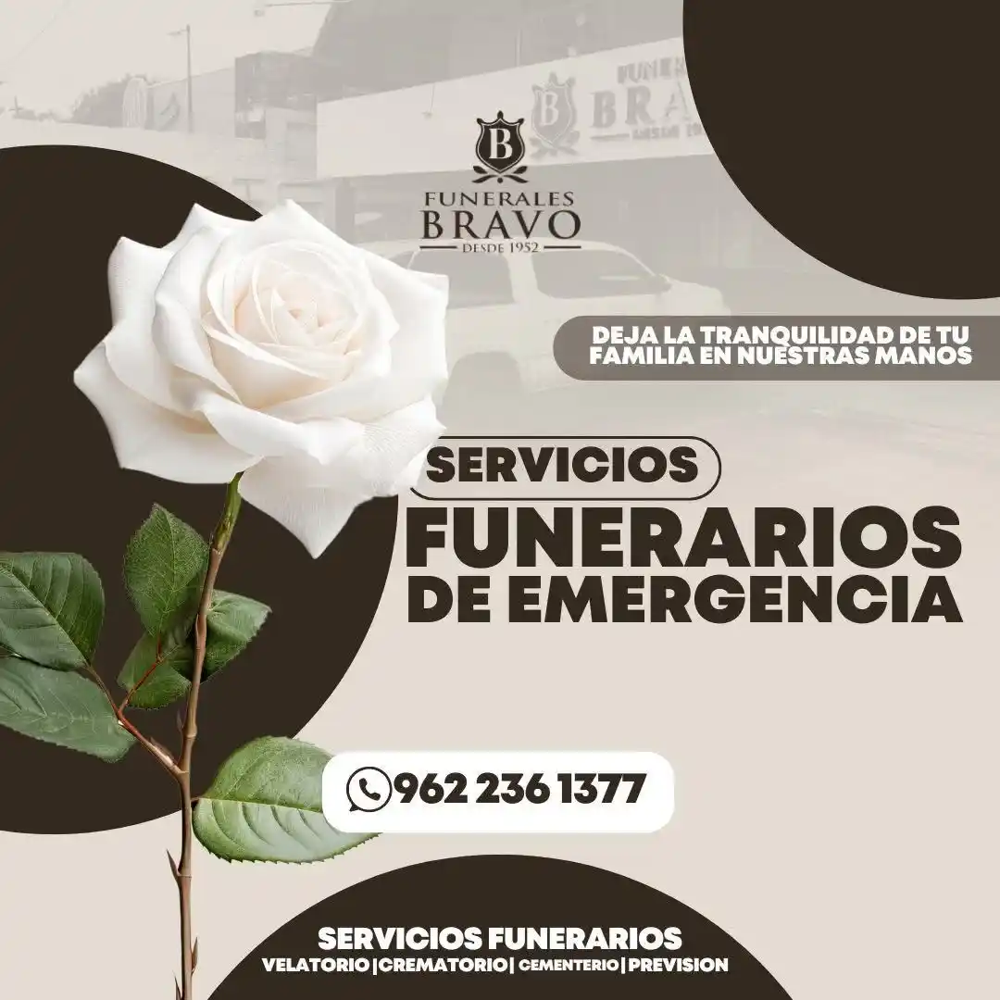

Ofrecemos atención profesional, humana y personalizada en cada etapa del servicio funerario. Confianza y respeto en los momentos más difíciles.
Más informaciónCon más de 70 años de trayectoria, somos la primera funeraria fundada en la región. Nuestro compromiso ha sido siempre brindar servicios funerarios de la más alta calidad, acompañando a las familias en sus momentos más difíciles con dignidad, respeto y profesionalismo.
Conoce MásPioneros en la región, estableciendo los estándares de calidad que nos distinguen hasta hoy.
Más de siete décadas brindando servicios funerarios con profesionalismo y sensibilidad.
Una tradición transmitida de generación en generación, con respeto y atención personalizada.
Soluciones completas adaptadas a cada necesidad, desde ceremonias tradicionales hasta servicios únicos.
Nuestros servicios
En los momentos más difíciles de la vida, estamos aquí para brindarte el apoyo, la comprensión y la dignidad que tu familia merece. Nuestro compromiso es hacer de este proceso algo más llevadero para ti.
Planifica con anticipación y asegura la tranquilidad de tu familia. Nuestros planes de previsión te permiten organizar todo con tiempo y sin presiones.
Servicios completos de velación con instalaciones preparadas para recibir a familiares y amigos en un ambiente sereno y respetuoso.
Brindamos la posibilidad de realizar el velatorio en la comodidad del hogar, respetando las tradiciones familiares y creando un ambiente íntimo.
Servicios especializados para despedir a tus compañeros fieles con el mismo amor y respeto que merecen, incluyendo opciones de memorial.
Espacios tranquilos y bien cuidados para el descanso eterno, con diferentes opciones de sepultura en un entorno natural y apacible.
Servicio de traslado disponible las 24 horas, manejado por personal capacitado con el máximo respeto y profesionalismo.
Nuestros espacios
Hemos diseñado salas con calidez y respeto, donde las familias pueden encontrar tranquilidad y recogimiento. Cada espacio ofrece privacidad y comodidad para honrar la memoria de sus seres queridos con dignidad.


Te compartimos algunos de nuestros servicios y testimonios en video para que conozcas más sobre nuestra atención y compromiso.
Conozca nuestras instalaciones y el proceso de atención personalizada que brindamos a cada familia.
Testimonios de familias que han confiado en nosotros durante momentos difíciles.
Servicio de Previsión Funeraria